Grafana Guide: Send Notifications
|
This content was generated with the assistance of AI and should be verified against the official documentation before being relied on in production. |
Checked on 2026-11-11 against Grafana 13.3.x.
What you build
You send the alert of the rule Guide high 5xx ratio to the webhook receiver of the lab through your own resources: a contact point guide-webhook
that posts to the path /guide, a notification template group guide that formats the title and the message, and a new notification policy tree
guide-tree whose route for team = bookshelf-guides uses its own grouping and timings. You finish by forcing a failure and reading the
payload that reaches the receiver.
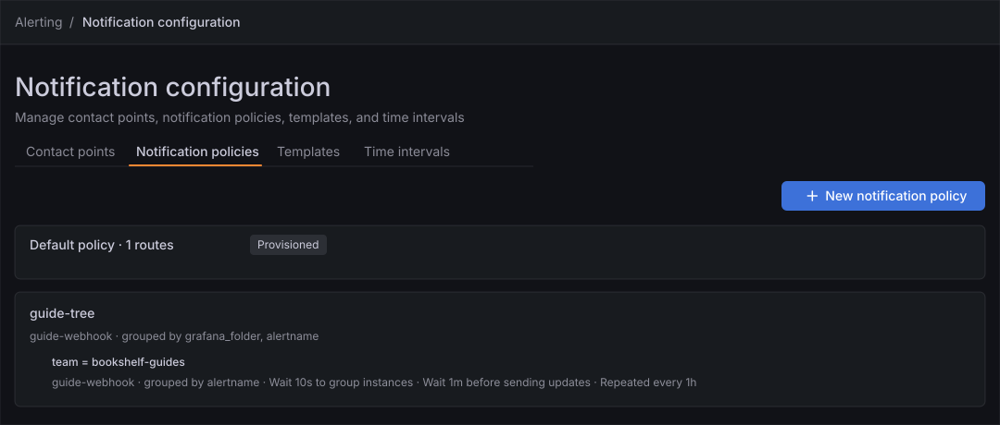
Before you start
-
Start the Grafana profile of the hands-on lab and wait about a minute:
cd lab docker compose --profile grafana up -d -
Open http://localhost:3000, sign in as
adminwith the passwordadmin, and click Skip when Grafana 13.3 asks you to update the default password. -
Do the previous guide, Create an alert rule. It creates the rule Guide high 5xx ratio in the folder Guides with the label
team=bookshelf-guides, which the route of this guide matches. If your rule carries other labels, use those in the matcher. -
The lab provisions a contact point, a template and a whole policy tree, and Grafana shows them read-only (the Provisioned badge). The tree cannot get a new route from the interface, which is why this guide creates a separate named tree instead of editing it. The lab also provisions rules that deliver to the path
/grafanaof the same receiver, so your own contact point uses the path/guideto tell the two apart. -
The guide was checked on Grafana Enterprise 13.3.0 (the free image, no licence key). Notification resources need the Editor or Admin role;
adminhas it. -
The figures are drawings of the Grafana 13.3 user interface, not screenshots, so small details can differ from your screen. A highlighted box with a number marks the control of the step with the same number.
Steps
All four phases work on the page Alerting → Notification configuration, which has the tabs Contact points, Notification policies, Templates and Time intervals. The rule form is the one described by the screen map of the guide Create an alert rule; come back to it when a control is not where the figure shows it.
Create a webhook contact point
-
In the left navigation, click Alerting, then Notification configuration.
-
On the Contact points tab, click New contact point.
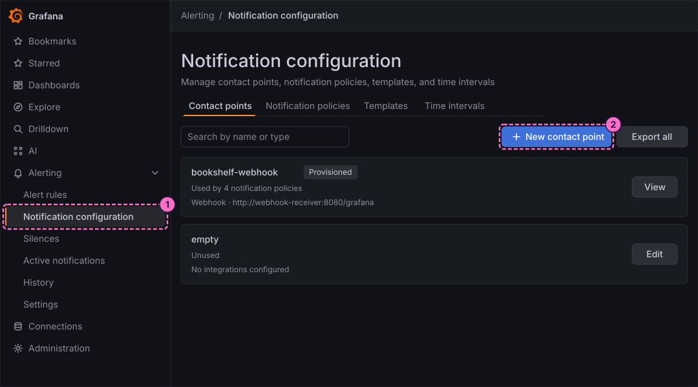
-
In Name, type
guide-webhook. If an earlier guide already created a contact point with this name, open it with Edit instead and continue with the URL step. -
In Integration, choose Webhook.
-
In URL, type
http://webhook-receiver:8080/guide. The receiver listens on port 8080 inside the lab network and on port 8081 of your machine.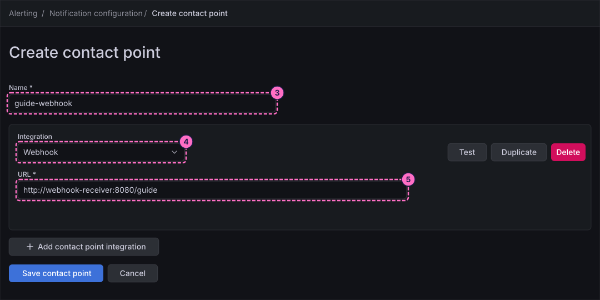
-
Click Test, at the right of the integration block, and send the test notification in the dialog that opens.
-
Click Save contact point.
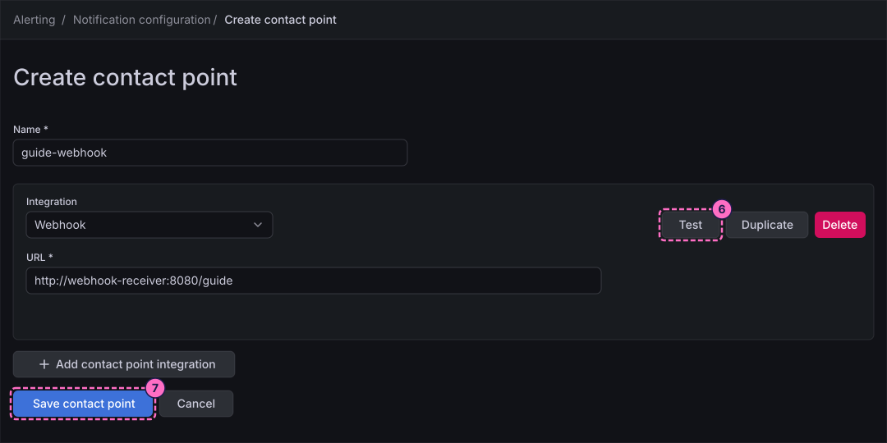
-
Ask the receiver what it got. The receiver keeps the last 50 requests and prints them on a plain
GET:curl localhost:8081/One entry has the path
/guide; itsbodyis the JSON that Grafana posted, withguide-webhookas thereceiver.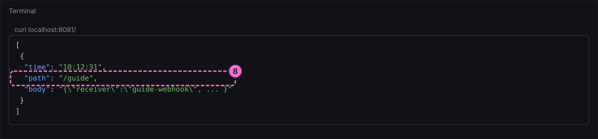
Write a notification template
-
Click the Templates tab, then the button that adds a notification template group. The page that opens is titled New notification template group.
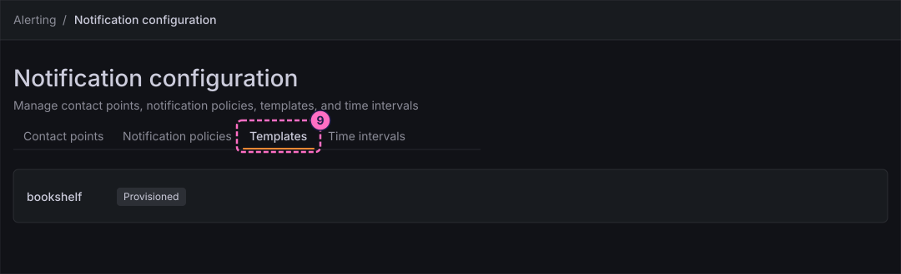
-
In Template group name, type
guide. -
In the Template group editor, replace the content with two definitions, one for the title and one for the message:
{{ define "guide.title" -}} [{{ .Status | toUpper }}] {{ .CommonLabels.alertname }} {{- end }} {{ define "guide.message" -}} {{ range .Alerts -}} {{ .Labels.alertname }}: {{ .Annotations.summary }} {{ end -}} {{- end }} -
Click Refresh in the Preview pane. Before it, the pane reads "Add template content to see preview"; afterwards it renders each definition for the sample alert of the Payload pane.
-
Click Save.
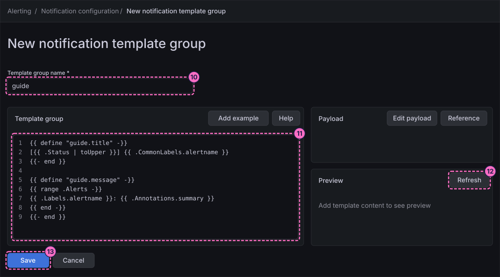
-
Use the template: on the Contact points tab, open
guide-webhookwith Edit, open the optional settings of the webhook integration, put{{ template "guide.title" . }}in the field for the title and{{ template "guide.message" . }}in the field for the message, and click Save contact point again. The labels of these optional fields were not read in the lab, so take the two text fields of the webhook settings that carry the words title and message.
Route alerts with a new notification policy tree
-
Click the Notification policies tab.
-
Click New notification policy.
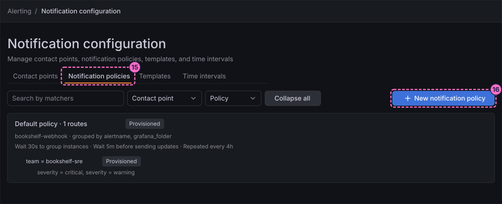
-
In the dialog New notification policy, type
guide-treein Name. -
In Default contact point, choose
guide-webhook. Leave Group by atgrafana_folderandalertname, its default. -
Click Create.
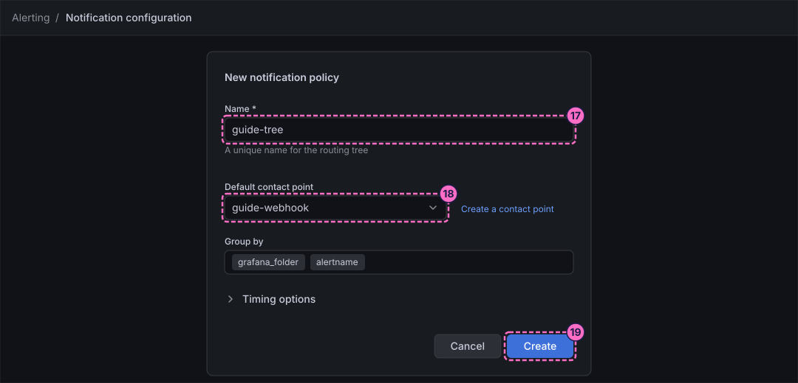
-
In the tree guide-tree, click Add route. On the provisioned tree this control is disabled.
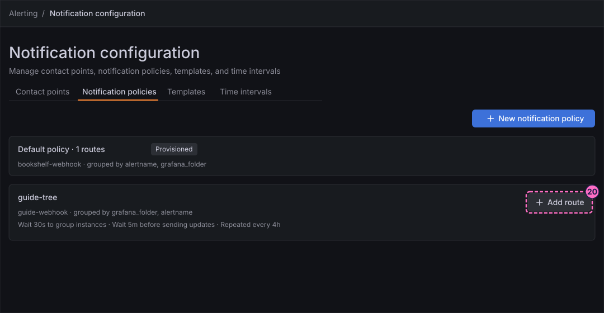
-
In the dialog Add route, under Matching labels, type the label
team, keep the operator=and type the valuebookshelf-guides. -
In Contact point, choose
guide-webhook. -
Turn on Override grouping. Group by is filled in with
grafana_folderandalertname; removegrafana_folderso thatalertnameis the only label. -
Turn on Override general timings and set Group wait to
10s, Group interval to1mand Repeat interval to1h. These are the same values as the lab’s route for critical alerts. -
Click Add route.
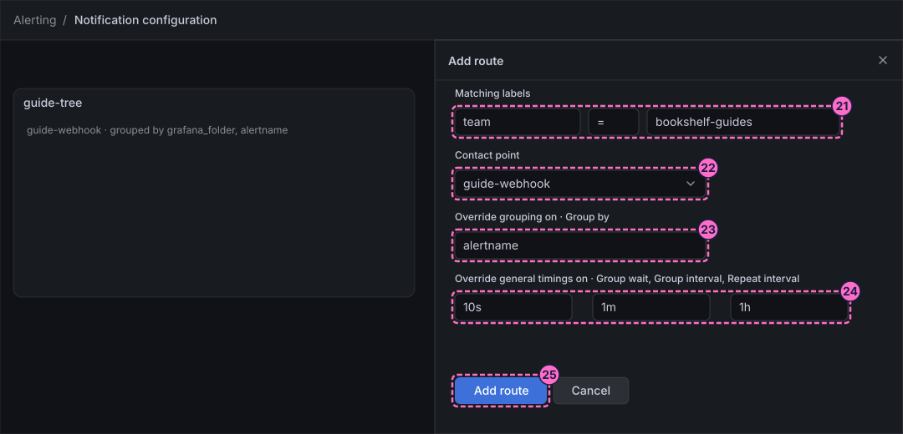
Connect the rule and preview the routing
-
In Alerting → Alert rules, open the rule Guide high 5xx ratio, click More and choose Edit.
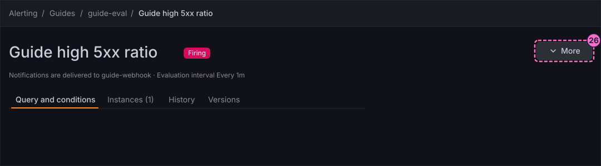
-
In section 5 Configure notifications, turn on Advanced options.
-
Under Recipient, the form says that notifications are routed by the notification policy tree and shows the select Default policy (a Change link opens it first when the rule used a contact point). Open the select and choose
guide-tree. -
Click Preview routing under Alert instance routing preview. The preview lists one entry, Delivered to guide-webhook, with the integration webhook and the count 1 instances; expand it to see the labels of the rule instance (
alertname,grafana_folder,severityandteam) and the View route button. -
Click Save.
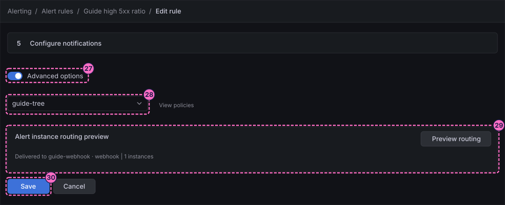
Deliver a notification and read the payload
-
Force the failure in the load generator:
curl -X POST localhost:8090/mode/failing -
Wait about three minutes: the rule goes Pending after one evaluation and Firing after its pending period, then the group wait of the route (
10s) elapses. Read the receiver; withjqinstalled, this filter keeps the deliveries of your contact point:curl -s localhost:8081/ | jq -c '.[] | select(.path=="/guide") | [.time, (.body|fromjson|.status, .title)]'Without
jq, runcurl localhost:8081/and look for the entries whosepathis/guide. Thetitlecomes from your template. Entries with the path/grafanabelong to the provisioned rules, which fire during the same failure.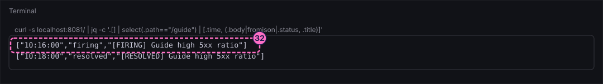
-
Restore normal traffic. The rule returns to Normal after about a minute and the resolved notification follows at the next update of the group, within the
1myou set:curl -X POST localhost:8090/mode/normal
Check the result
-
Alerting → Notification configuration → Notification policies shows the tree guide-tree with the route
team = bookshelf-guides. -
The receiver holds a
firingand aresolveddelivery with the path/guide, and thetitlehas the form[FIRING] Guide high 5xx ratio. The default payload also carriesreceiver,status,alerts(each withlabels,annotations,fingerprint,dashboardURLandpanelURL),groupLabels,commonLabels,externalURLandmessage. -
Timings: in the lab, with the defaults of a rule that uses a contact point directly (group wait 30 s, group interval 5 m), the first webhook arrived 30 s after the rule went Firing and the resolved one exactly 5 m after it. This guide’s route shortens both to the
10sand1myou set, so expect the deliveries sooner; the figures here were not measured with those values.
Variations
-
Set the contact point of the rule directly, with Advanced options off and a Contact point choice, to see the simplified routing: it needs no tree, and the same receiver gets the same payload.
-
Add a second child route under
guide-treeforseverity = warningwith a longer repeat interval, and use Preview routing to check which route each label set takes.
What can go wrong
| Symptom | Cause | Fix |
|---|---|---|
Add route is disabled |
You are looking at the provisioned tree, whose rows carry the Provisioned badge. |
Use the tree guide-tree that you created with New notification policy. |
The test notification does not reach the receiver |
The URL uses |
Use |
The receiver shows only entries with the path |
The rule still uses another contact point, or the labels of the rule do not match the matcher. |
Open the rule, check section 5 and the labels, or use Preview routing. |
The title is the default one, not |
The template was saved, but the contact point does not call it. |
Edit |
No notification arrives for several minutes |
The group wait and the evaluation have not elapsed yet, or the failure stopped before the pending period ended. |
Wait for the state Firing on the rule page, then read the receiver again; check the mode with |
Clean up
Keep the contact point, the template and the tree: the next guide attaches a time interval to the route of guide-tree. Remove the failure with curl -X POST localhost:8090/mode/normal.
To delete everything the lab stores, stop the profile with docker compose --profile grafana down -v.
Where to go next
-
Previous guide: Create an alert rule.
-
Next guide: Silence, schedule and review alerts, which silences the alert, mutes the route on a schedule and reads the history.
-
Reference: Contact Points and Integrations, Notification Templates and Notification Policies explain every field used here.